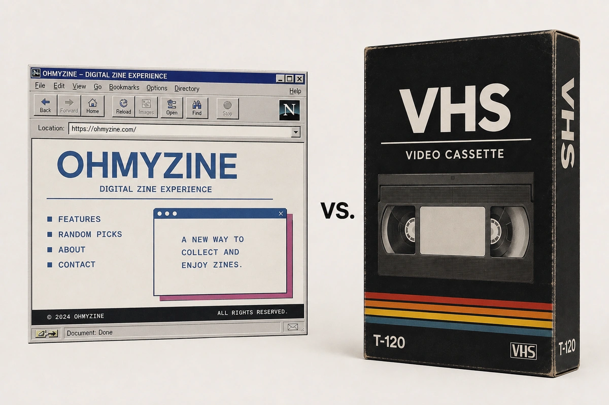

OMZ
ATTENTION
OMZ
ATTENTION
5,339文字
CATEGORY / 01
INDEX / CATEGORY DATABASE / 001
服を入口に、音楽、ストリート、ブランド、時代の背景まで辿る記事ライブラリ。
OMZ
ATTENTION

OMZ VSH
FEATURE 001 / LONG READ
クリックして記事を再生
OH MY ZINE FASHION CHANNEL
スポーツウェア、HIPHOP、R&B、Y2K。映像を見るように、服の背景にあるカルチャーを読み進める記事です。
TRACK 01
FASHION / MUSIC / CULTURE
スポーツウェア、HIPHOP、R&B、Y2K。その背景にあるカルチャーを辿ります。
OPEN ARTICLE →FASHION
次の記事を準備中です。
ARCHIVE
新しい記録がここに追加されます。